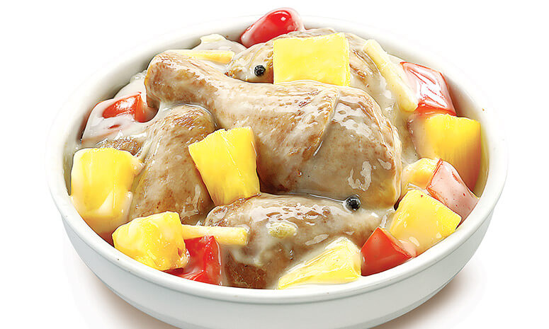

Pininyahan Recipe

Description
A sweet and savory Filipino dish where chicken is cooked with pineapples and vegetables in a creamy coconut sauce.
- 1 kg chicken, cut into serving pieces
- 1 can (200g) pineapple chunks with juice
- 1 cup coconut milk
- 1 onion, chopped
- 3 cloves garlic, minced
- 1 carrot, sliced
- 1 red bell pepper, sliced
- 2 tbsp fish sauce
- 2 tbsp cooking oil
- Salt and pepper to taste
Steps
- Heat oil in a pan and sauté garlic and onion until soft.
- Add chicken and cook until lightly browned.
- Pour in pineapple chunks with juice and fish sauce. Simmer for 10 minutes.
- Add coconut milk, carrots, and bell pepper. Cook until vegetables are tender.
- Season with salt and pepper. Serve hot.